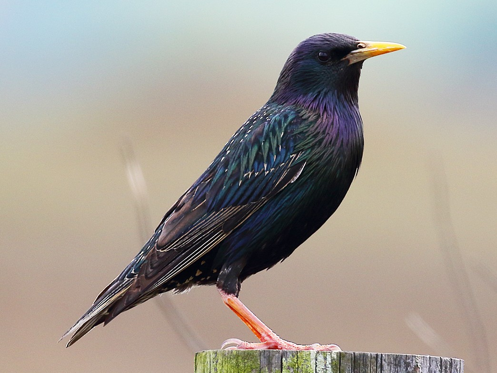

Glossy, squawky and starry.
Smaller than blackbirds, with a short tail, pointy head and wings, starlings look black
at a distance but when seen closer they are very glossy with a sheen of purples and greens.
In winter they're covered in pale spots - which gives them their name.
Their flight is fast and direct and they walk and run confidently on the ground. Noisy
and gregarious, starlings spend a lot of the year in flocks.
Still one of the commonest of garden birds, its decline elsewhere makes it a Red List
species.
Starlings aren't picky and will eat almost anything they can get their beaks into: insects, worms, snails, berries, fruit, scraps, suet. However, they feed only invertebrates - not "junk" food - to their young. Their beak is used to probe the ground and is powerful enough to be opened to part the ground and reach food that is buried, they can also swivel their eyes forward to look along the length of their bill to the area they are probing. They can be quarrelsome on the bird table, however.
Woodland, Farmland, Grassland, Marine and intertidal, Wetland, Upland, Urban and suburban
Starlings are conspicuous and widespread in the UK, occurring everywhere except for the highest parts of the Scottish Highlands. They are most abundant in southern England and are more thinly distributed in upland areas with moorland. Still one of the UK's commonest garden birds. In winter, huge roosts can be found in plantations, reedbeds and city centres.
You can see starlings all year round. Large numbers arrive in autumn to spend the winter here